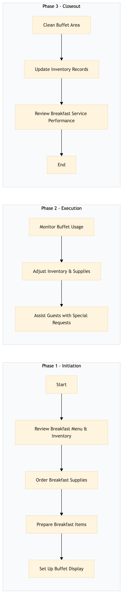

| Role | Steps |
|---|---|
| Executive Housekeeper | 1.1 1.2 2.2 3.2 |
| Culinary Team Leader | 1.3 1.4 2.3 |
| Front Desk Agent | 2.1 2.3 |
| Housekeeping Team Leader | 3.1 |
| Revenue Manager | 3.3 |
| Step | Name | Role | System | Input | Output | KPI | Dec? | Exc? | Pain Point / Risk |
|---|---|---|---|---|---|---|---|---|---|
| 1.1 | Review Breakfast Menu & Inventory | Executive Housekeeper | Oracle OPERA Cloud | Menu plan for the day | Inventory check list | Less than 5 minutes | N | Y | Incorrect inventory levels leading to menu adjustments |
| 1.2 | Order Breakfast Supplies | Executive Housekeeper | Birchstreet Procurement | Inventory check list | Purchase order confirmation | Within 30 minutes of review | N | Y | Delays in supply delivery affecting service |
| 1.3 | Prepare Breakfast Items | Culinary Team Leader | Oracle MICROS Simphony | Breakfast menu plan | Prepared breakfast items | Within 2 hours of order confirmation | N | Y | Inconsistent food quality due to preparation errors |
| 1.4 | Set Up Buffet Display | Culinary Team Leader | Oracle OPERA Cloud | Prepared breakfast items | Buffet display setup | Less than 1 hour | N | Y | Poor presentation affecting guest satisfaction |
| 2.1 | Monitor Buffet Usage | Front Desk Agent | Oracle OPERA Cloud | Guest check-in data | Buffet usage report | Every 30 minutes during breakfast service | Y | N | Over/underutilization of buffet resources |
| 2.2 | Adjust Inventory & Supplies | Executive Housekeeper | Birchstreet Procurement, Oracle OPERA Cloud | Buffet usage report | Adjusted inventory levels and supply orders | Within 1 hour of report generation | Y | N | Inadequate stock leading to service disruptions |
| 2.3 | Assist Guests with Special Requests | Front Desk Agent, Culinary Team Leader | Oracle OPERA Cloud | Guest requests | Special request fulfillment | Less than 5 minutes per request | N | Y | Unmet special requests affecting guest satisfaction |
| 3.1 | Clean Buffet Area | Housekeeping Team Leader | Oracle OPERA Cloud | Buffet display setup | Clean buffet area | Less than 45 minutes after breakfast service ends | N | Y | Dirty areas affecting guest experience |
| 3.2 | Update Inventory Records | Executive Housekeeper | Oracle OPERA Cloud, Birchstreet Procurement | Final inventory levels | Updated inventory records | Within 1 hour after breakfast service ends | N | Y | Incorrect inventory records leading to future ordering errors |
| 3.3 | Review Breakfast Service Performance | Revenue Manager | Oracle OPERA Cloud, IDeaS G3 RMS | Guest feedback and buffet usage data | Service performance report | Within 24 hours after breakfast service ends | N | Y | Lack of actionable insights for process improvement |
The process outlines the setup and management of a breakfast buffet at a full-service Marriott hotel using Oracle OPERA Cloud PMS. It ensures efficient service delivery, inventory control, and guest satisfaction.